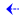

int a = 10
int b -> a
源码
10
运行时内存
0x1000
10
如果按照传统编程的思路，你可能会这样标注：
0x1000
a
b
a是10，没问题 ✔️
b是 0x1000 ？？？
按照C语言的语法(int* b= &a) 那么b是地址0x1000
10
0x1000
a
而在AXION的世界观下，正确的标注应该是：
b_ADDR
a是int 10✔️
b_ADDR 是地址 0x1000 ✔️
从运行时内存上看，和C语言指针没有任何差别，但区别在于“b是什么”这个问题上
源码
int a = 10
int b -> a
编译时 符号表
符号："a"
对象类型：int
句柄类型：实例型
偏移：0
符号："b"
对象类型：int
句柄类型：指针型
0x1000
0x1004
0x1000
0x1004
符号："b_ADDR"
对象类型：地址
解引用类型：int
句柄类型：实例型
偏移：4
1、b_ADDR是编译器根据“int b->a”自动生成的
无需、也不该手动定义
b 指针类型不占运行时内存，没有偏移字段


运行时 内存
这里的“b”只是一个ASCLL字符(十进制98）



把人当成编译器的话，这就是人脑中的意识形态
现在b_ADDR=~a
所以现在 b指向a
1、用户诉求：希望通过【符号b】访问到【对象a】
2、探索解决方案：根据宿主平台的规则(CPU等物理硬件的客观事实)，我们终究需要通过“地址 与 解引用”来实现这个需求
因此，
3、我们约定一个契约：当我定义“int b->a时”，编译器自动给我生成 b_ADDR 用来保存地址—— 相当于C语言的 b_ADDR = &a
4、当我访问b时：则需根据b_ADDR的值寻址至目标对象——相当于C语言的转型+解引用 *b_ADDR
AXION的指针是运行时动态可变的，而非静态的—— 这和C++那种静态引用完全不同
例如若后续继续修改b->c
.text段指令本身未变
但b_ADDR的值会从a的地址(0x1004)变成了c地址(0x1008)
之后读到的就是c数据的20
10
0x1000
a
b_ADDR
0x1000
0x1004
b本身不分配内存，它只是在根据b_ADDR的地址指向不同对象，是一种动态的“对象访问契约”
总结：b->a实际上是向编译器声明一套协同方案
指针本身不占内存，占内存的那个不是指针 而是 引用(或者说地址、ADDR)
指针只"存在"于源码 & 编译过程里

这是AXION对传统编程世界观的语义革命
AST
int a = 10
符号表
1、a是实例型句柄
2、int 偏移0，所以输出a dd


输出
org 0x1000
dd 10
dd 0x1000
section .text
mov ebx, [0x1004]
mov eax, [ebx]
call print
jmp $
print: ; 可直接以eax作为参数
...略
符号："a"
对象类型：int
句柄类型：实例型
偏移：0
符号："b"
对象类型：int
句柄类型：指针型
符号："b_ADDR"
对象类型：地址(ADDR)
解引用类型：int
句柄类型：实例型
偏移：4
-- int类型决定了对象占4字节
int b -> a
1、b是指针型句柄，所以自动生成b_ADDR
2、int，所以输出dd 0x1000


-- AST 是编译的起点，仅结构化语义，不改变逻辑
所以为方便理解，这里以整条语句为单位
-- 假设a、b都是全局变量
-- 假设裸机环境，不用变量名，纯手动指定地址
NASM
print b
1、b是指针型句柄，所以重定向至b_ADDR
2、b是int b_ADDR是地址 偏移4 ，所以输出: mov...mov...call print
最后输出jmp$ 死循环，避免CPU乱跑
C
#include <stdio.h>
int a = 10;
int *b_ADDR = &a;
int main() {
printf("%d", *b_ADDR);
return 0;
}
LLVM IR
@a = global i32 10
@b_ADDR = global i32* @a
declare i32 @printf(...)
define i32 @main() {
%ptr = load i32*, i32** @b_ADDR
%val = load i32, i32* %ptr
ret i32 0
}
具体来说
0x1004: b_ADDR = 0x1000
0x1000: a = 10
解引用并写入eax，eax = 10
读取b_ADDR的值至ebx，ebx = 0x1000
理论上，通过类型就可以知道数据大小，可通过累加之前对象的大小计算出偏移，但实际上最好还是存一个“偏移”字段
有两方面考虑：
1、照顾编译效率：如果变量很多，编译器每次读到变量名就得去当场重新累加计算一遍，效率很低
2、照顾运行效率：实际分配给对象的内存可能会 ≥ 对象本身size，因为需要考虑内存对齐来提高CPU的访存效率(会分配额外的空白内存用以填充对齐)
--开发er 的编译器是计算机软件，例如 AXION Complier.exe
--产品er 的编译器是开发er，例如产品经理需要向开发人员传递设计需求、引入新概念时需要提前说明...
图例

根据这个
修改这个
步骤与数据
--上文也说过，这完全是C++设计者自己的固执，个人觉得毫无道理
实际上，借助即将学习到的“解释型对象”，你可以实现真正的“静态映射”语义( 完全不占任何运行时内存，甚至连ptr都不存在) ——这完全是开发者自己的自由
到时候，你能用它实现更多、更有想象力、更自由、更丰富的语义——就像自然语言那样，定义新概念、然后使用它
这里的“指针”仅仅“解释型对象”所有应用场景中的冰山一角
但根据上文，可以大致猜测到的是：所谓“解释型”，对应的就是这个“句柄类型：解释型”的字段
传统编程：指针是地址
AXION对“指针”的定义和传统编程不同
AXION：指针是一种“句柄类型”
1、我们可通过a来访问对象，所以符号a也称为“句柄”
2、当定义int a->x 后，此时"符号a是一个int类型的指针"，这有两层含义——
a的【数据类型】是int
a是【指针型】句柄
3、之后我们说
“指针a、指针b”——指的是 句柄本身，与目标对象无关
“对象a、对象b”——指的是 符号所指向的目标对象
int* a=&x
// x本身是地址(例如 地址0x1000)，但我们称之为“指针”
--这一节里，可简单理解为一种“关系模式、关系类型”，就像箭头那样
int a->x
符号：a
对象类型：int
句柄类型：解释型
2、b_ADDR的类型签名~int 在符号表里被拆分为2部分
具体原因在之后《地址与类型系统的关系》中会解释


-- AXION可编译成其他能直接操控CPU与内存的底层语言，例如机器码、汇编、C、LLVM.....甚至AXION自己
但本章节姑且先编译成 NASM、C、LLVM ，这会让你更有“实感”
b
a是 int类型的指针/引用
按C的思路：a本质是地址，只不过叫指针
按C++的思路：一种抽象的、指针里面又包了层对象的“特殊对象类型”
a是 int类型 的指针

对象类型

句柄类型
--符号与对象之间的关系
-- AXION的句柄类型不止一种，指针型只是其一
3个句柄 a、b、b_ADDR ：
a代表的对象固定为0x1000位置的数据
b代表的对象是b_ADDR的解引用(b_ADDR~)，会随着b_ADDR的值动态改变
b_ADDR是编译器根据 b->自动生成的
2个对象
0x1000里的10 —— 可用句柄a和b访问)
0x1004里的0x1000 —— 可用句柄b_ADDR访问)
--【句柄】只是编译期概念（为了让编译器定位到对象而存在的助记符），不占运行时内存；
-- 运行时真正占内存的才叫对象